Extended: More uses of config to control ggpedigree plots
Source:vignettes/articles/v11_configuration_extended.Rmd
v11_configuration_extended.Rmd
library(ggpedigree) # ggPedigree lives here
library(BGmisc) # helper utilities & example data
library(ggplot2) # ggplot2 for plotting
library(viridis) # viridis for color palettes
library(tidyverse) # for data wranglingEvery gg-based plotting function in ggpedigree accepts
a config argument. This is an easier way to control plot
behavior without rewriting the plotting code.
As already discussed, a config is a named list. Each
element corresponds to one plotting, layout, or aesthetic option. You
pass the list to the plotting function and the plot is drawn using those
values.
You do not need to supply every option. You only provide the options
you want to change. Any options you do not specify will use the package
defaults. You can see a full list of supported options and their
defaults by reviewing the documentation for
getDefaultPlotConfig().
Basic usage of config in ggPedigree()
As before, we will use the potter pedigree dataset
bundled in BGmisc.
A basic pedigree plot uses defaults:
ggPedigree(
potter,
famID = "famID",
personID = "personID",
momID = "momID",
dadID = "dadID"
)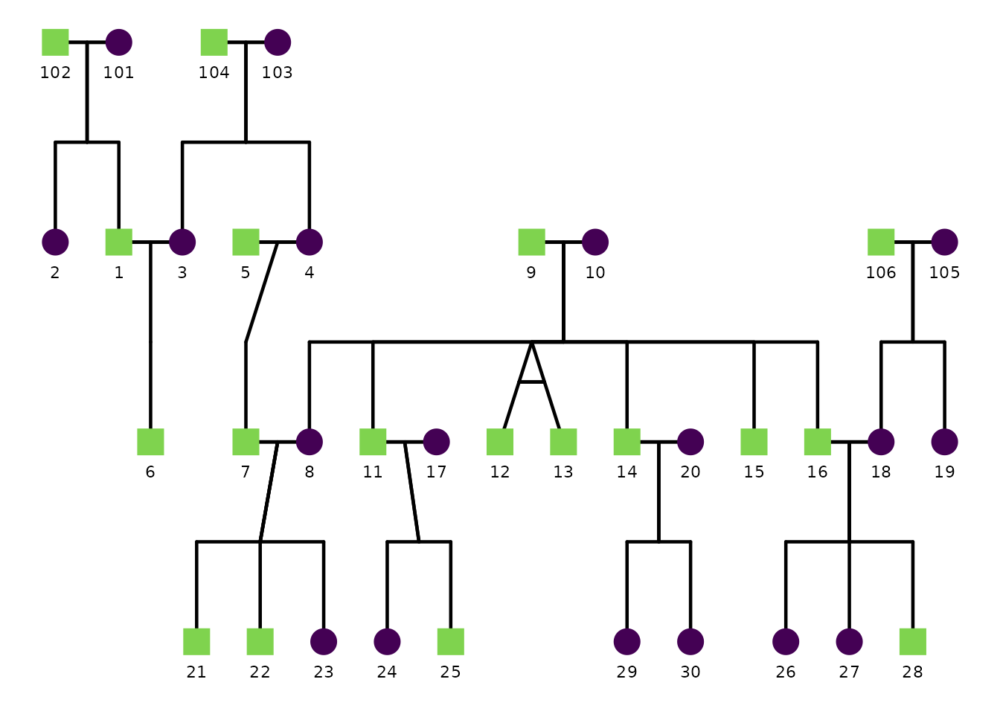
Sex coding: code_male and code_female
ggPedigree() (and other ggpedigree plots that use sex)
need to know how sex is encoded in your data so they can assign the
correct shapes (and optionally colors)
for female, male, and unknown.
The code_male and code_female config
options define which values in your sex column should be treated as male
vs female. The defaults assume:
code_female = 0code_male = 1
If your dataset uses different codes (for example 1/2 or
"M"/"F"), override these in config.
# Example: sex coded as 1 = male, 2 = female
ggPedigree(
ped,
famID = "famID",
personID = "personID",
momID = "momID",
dadID = "dadID",
config = list(
code_male = 1,
code_female = 2,
code_unknown = 3
)
)
# Example: sex coded as "M" / "F"
ggPedigree(
ped,
famID = "famID",
personID = "personID",
momID = "momID",
dadID = "dadID",
config = list(
code_male = "M",
code_female = "F"
)
)Once the sex codes are interpreted correctly, the plot uses the
corresponding shape settings (sex_shape_female,
sex_shape_male, sex_shape_unknown) and, when
enabled, sex-based coloring (sex_color_include,
sex_color_palette).
Customizing specific plot components via config
The rest of this section demonstrates how config affects
specific components of the pedigree plot.
1) Labels
Label behavior is controlled by keys such as:
label_includelabel_columnlabel_methodlabel_max_overlaps-
label_text_color,label_text_family label_text_size-
label_nudge_x,label_nudge_y label_text_angle
This example customizes labels. Here we label individuals by
first_name, enlarge label text, and nudge the labels down
slightly.
ggPedigree(
potter,
famID = "famID",
personID = "personID",
momID = "momID",
dadID = "dadID",
config = list(
label_include = TRUE,
label_column = "first_name",
label_text_size = 3.2,
label_nudge_y = 0.15
)
)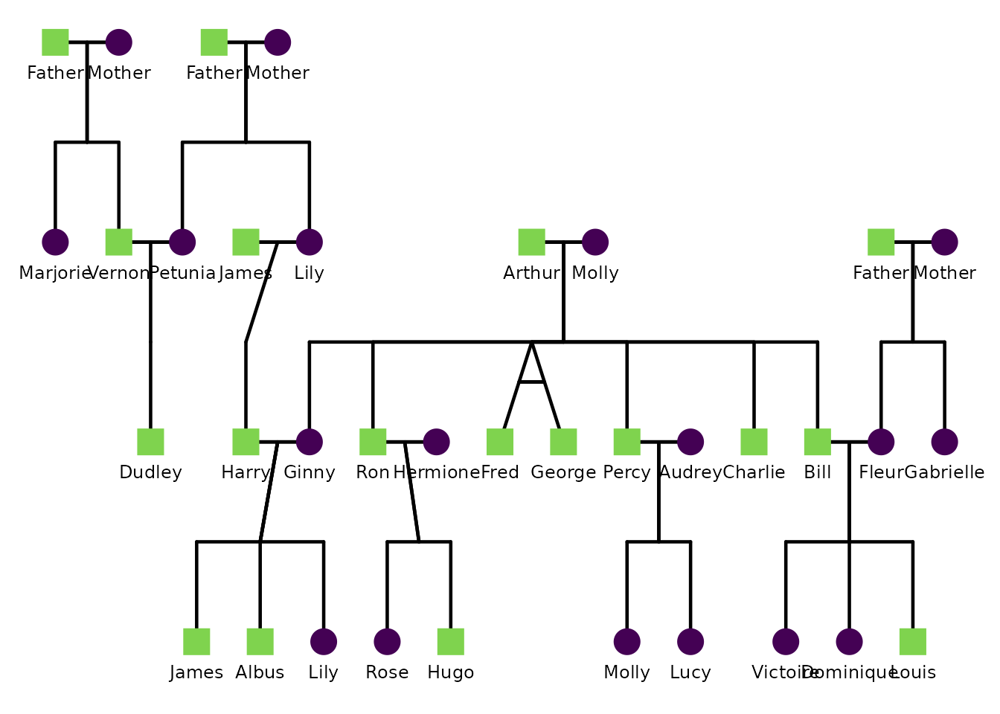
To turn labels off completely:
ggPedigree(
potter,
famID = "famID",
personID = "personID",
momID = "momID",
dadID = "dadID",
config = list(label_include = FALSE)
)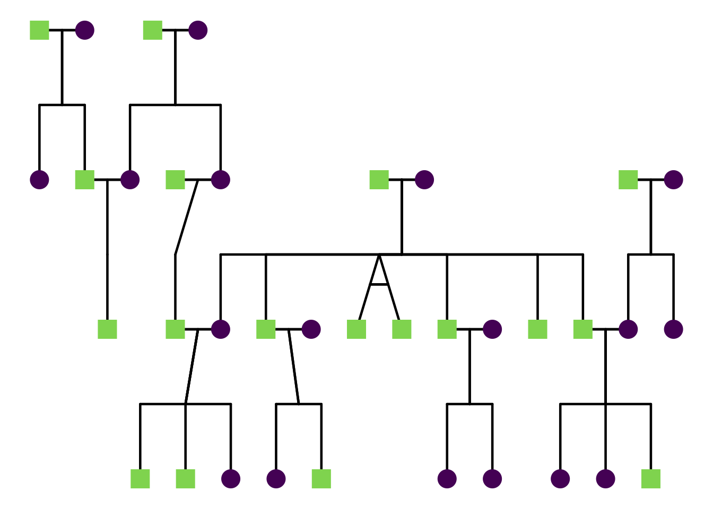
You can also use repelled labels to avoid overlaps:
ggPedigree(
potter,
famID = "famID",
personID = "personID",
momID = "momID",
dadID = "dadID",
config = list(
label_include = TRUE,
label_method = "geom_text_repel",
label_max_overlaps = 10,
label_text_size = 9,
label_segment_color = "grey50"
)
)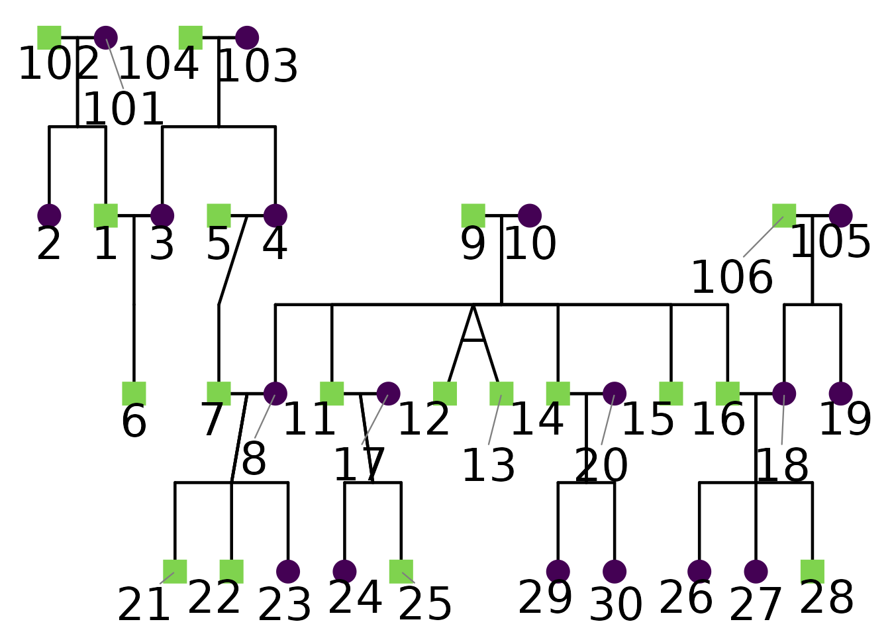
Note that short labels are less likely to overlap, so consider
abbreviating labels if your pedigree is dense. In this example, I
enlarged the text size to demonstrate repulsion more clearly. There is a
helper function called renumberPedigreeIDs() that can be
helpful in creating shorter IDs.
2) Points and outlines
Point size and whether points scale automatically are controlled by:
point_sizepoint_scale_by_pedigree
Outlines are controlled by:
outline_includeoutline_multiplieroutline_coloroutline_alpha
This example disables automatic point scaling and adds black outlines to points.
ggPedigree(
potter,
famID = "famID",
personID = "personID",
momID = "momID",
dadID = "dadID",
config = list(
point_scale_by_pedigree = FALSE,
point_size = 6,
outline_include = TRUE,
outline_color = "maroon",
outline_multiplier = 1.5,
outline_alpha = 1
)
)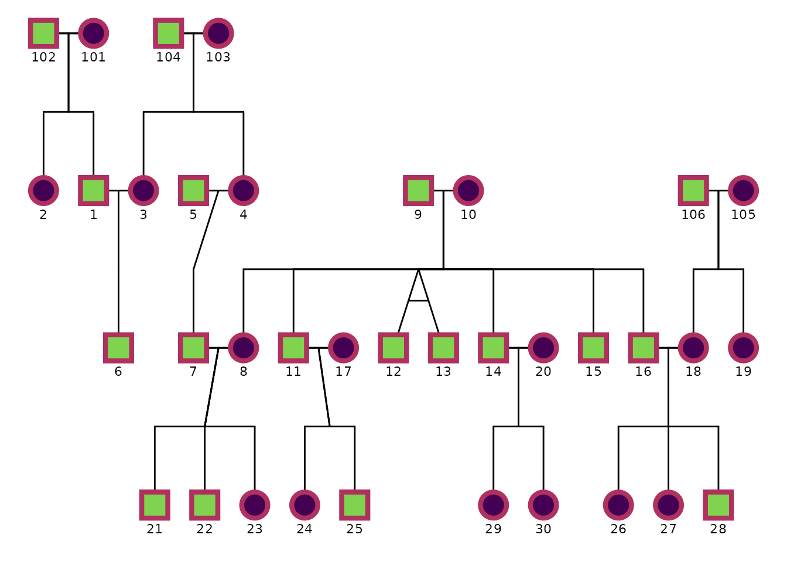
3) Segments (relationships)
Segments are controlled by options such as:
-
segment_linewidth,segment_linetype -
segment_offspring_color,segment_parent_color,segment_spouse_color -
segment_self_*for self-loops -
segment_mz_*for MZ twin segments
This example thickens relationship segments and changes the spouse segment color.
ggPedigree(
potter,
famID = "famID",
personID = "personID",
momID = "momID",
dadID = "dadID",
config = list(
segment_linewidth = 2,
segment_spouse_color = "steelblue",
segment_parent_color = "black",
segment_offspring_color = "black"
)
)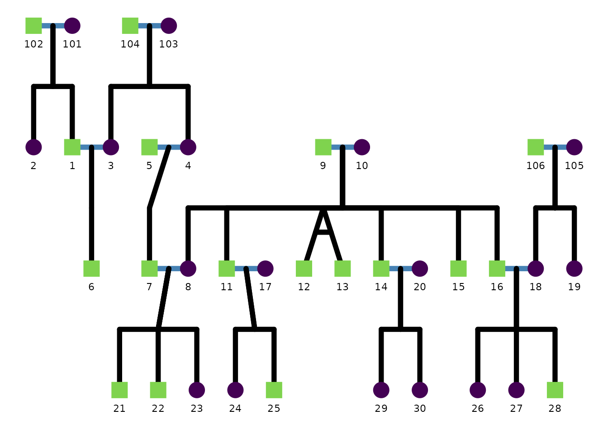
Self-loop geometry is also configurable:
ggPedigree(
inbreeding %>% filter(famID %in% 5),
famID = "famID",
personID = "ID",
momID = "momID",
dadID = "dadID",
config = list(
segment_self_linetype = "dotdash",
segment_self_color = "hotpink",
segment_self_alpha = 0.6,
segment_self_linewidth = 1.5,
segment_self_curvature = -0.2,
segment_self_angle = 80,
code_male = 0
)
) + ggtitle("Custom self-loop appearance")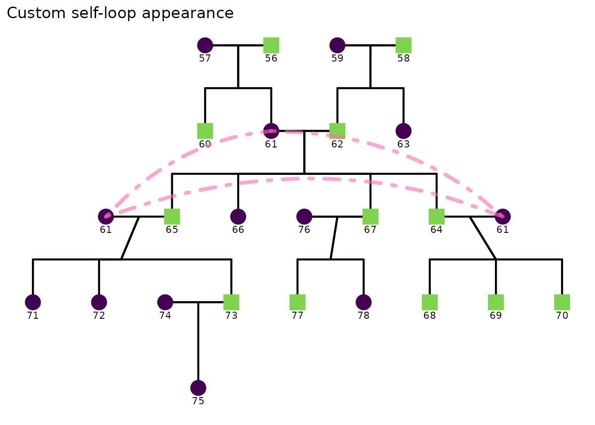
4) Sex appearance
Sex is controlled by settings such as:
sex_color_includesex_color_palette-
sex_shape_female,sex_shape_male,sex_shape_unknown -
sex_legend_show,sex_legend_title
This example shows the sex legend and customizes shapes.
Here I use shapes 17 (triangle) for males, 18 (diamond) for females,
and 16 (circle) for unknown. You can find a full list of shape codes in
the pch documentation (?points). You can also
use shapes from the ggplot2 shape palette (e.g., 21-25 for
filled shapes). Here I also disable sex coloring to focus on shapes
alone.
ggPedigree(
potter,
famID = "famID",
personID = "personID",
momID = "momID",
dadID = "dadID",
config = list(
sex_legend_show = TRUE,
sex_shape_female = 18,
sex_shape_male = 17,
sex_shape_unknown = 16,
sex_color_include = FALSE
)
)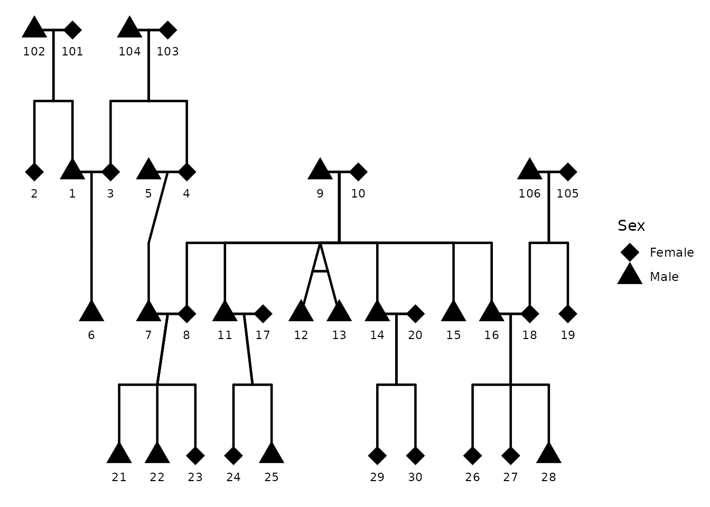
Below, I use a custom color palette for sex as well as emoji shapes for fun.
plot_ped <- ggPedigree(
potter,
famID = "famID",
personID = "personID",
momID = "momID",
dadID = "dadID",
config = list(
sex_color_palette = c("purple", "orange", "grey50"),
sex_shape_female = "🥰",
sex_shape_male = "🚗"
)
)
ggplot2::ggsave(
filename = "custom_sex_emoji_pedigree.png",
plot = plot_ped,
width = 8,
height = 6,
dpi = 300
)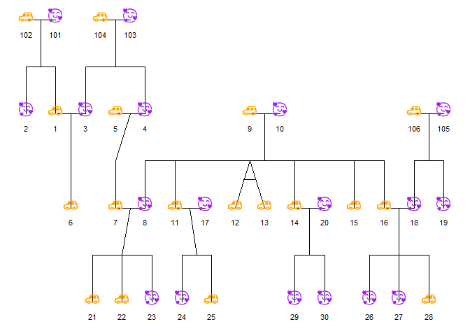
Note that when using emoji shapes, it is best to use
ggsave() to save the plot to a file, as some R graphics
devices may render emoji differently. Notice how the emoji shapes appear
in the saved PNG file below compares to the image rendered during the
preview above. These images may vary because of differences in font
rendering.
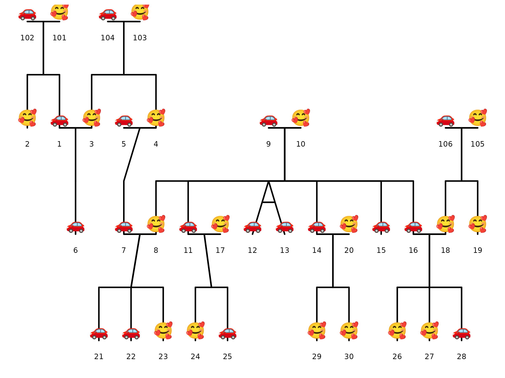
5) Affected status overlay
Affected status behavior is controlled by config keys such as:
status_include-
status_code_affected,status_code_unaffected -
status_alpha_affected,status_alpha_unaffected -
status_color_affected,status_color_unaffected status_legend_show
If your dataset includes an affected status column, you can control how affected status is drawn.
Below is a template showing the relevant config keys. Here I use the
hazard dataset from BGmisc. The
affected column uses 1 for affected and 0 for
unaffected.
ggPedigree(
hazard,
famID = "famID",
personID = "ID",
momID = "momID",
dadID = "dadID",
status_column = "affected",
config = list(
code_male = 0,
status_include = TRUE,
status_code_affected = 1,
status_code_unaffected = 0,
status_alpha_affected = .6,
status_alpha_unaffected = 0,
status_color_affected = "red",
status_shape_affected = 8,
status_legend_show = TRUE
)
)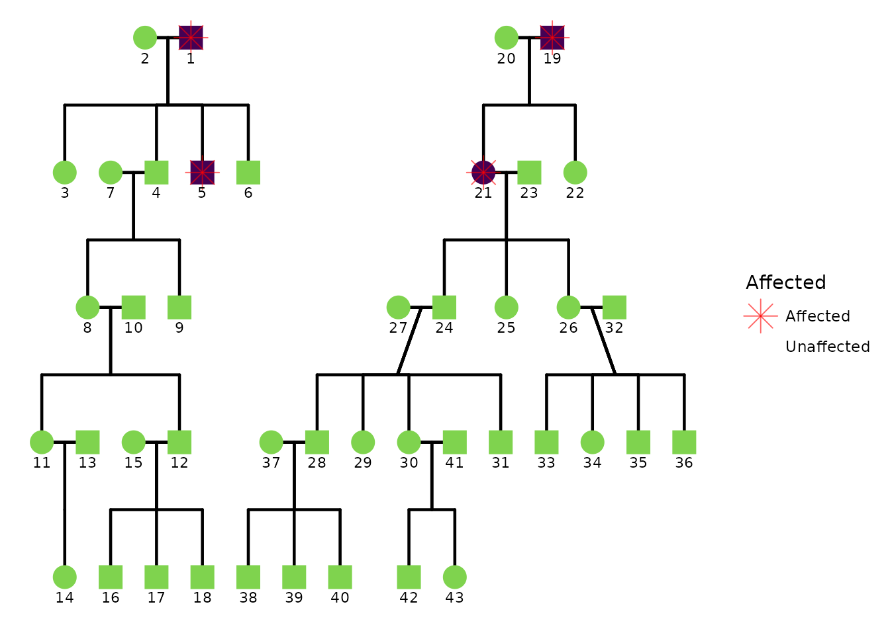
Multiple overlays with per-overlay customization
When a single status marker is not enough, you can pass a
list of overlay specs to the overlays
argument. Each element of the list is itself a list that names a column
and optionally overrides any overlay config key — shape,
color, stroke, size, and
code_affected — for that layer only. Config defaults are
used for any key you leave out.
The hazard dataset already contains deathYr
and onsetYr, which map naturally onto two independent
overlays — deceased individuals (a cross) and those with a recorded
disease onset (a slash):
# Derive binary flags from columns already present in hazard
hazard$deceased <- ifelse(!is.na(hazard$deathYr), 1, 0)
hazard$onset <- ifelse(!is.na(hazard$onsetYr), 1, 0)
ggPedigree(
hazard,
famID = "famID",
personID = "ID",
momID = "momID",
dadID = "dadID",
overlays = list(
list(column = "deceased", code_affected = 1, shape = "cross", color = "purple"),
list(column = "onset", code_affected = 1, shape = "slash", color = "red", stroke = 2)
),
config = list(
code_male = 0,
overlay_include = TRUE,
overlay_mode = "shape",
reduce_variables = F,
sex_color_include = FALSE
)
)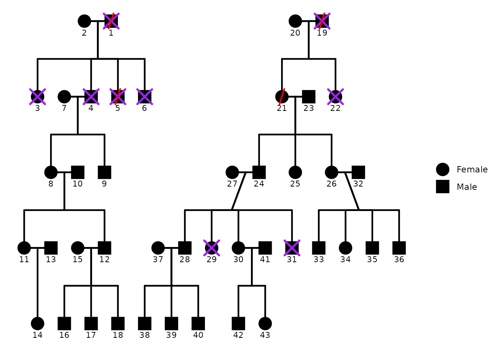
A few things to note:
-
overlay_mode = "shape"must be set inconfig(or via a preset such as"clinical") to activate shape-based rendering. Without it the overlay loop falls back to alpha transparency. - Each spec can carry any combination of per-layer overrides. Specs
with no override for a key inherit the matching
config$overlay_*default, so you only need to specify what differs. - The specs are rendered as separate
geom_point()layers in list order, so later specs draw on top of earlier ones for individuals who satisfy both conditions.
This means that when we have multiple conditions to show, they can be layered on top of each other with different shapes and colors. In the example above, we have two overlays: one for deceased individuals (a purple cross) and another for disease onset (a red slash). Individuals who are both deceased and have a recorded disease onset will have both shapes drawn on top of their node, allowing us to visually distinguish between different combinations of conditions.
Building on the previous example, we can also leverage other config
options to further customize the plot. For instance we can facet by
family ID to separate the pedigrees, and we can add labels for maternal
IDs with custom colors. Here I use ped2maternal() to add a
matID column to the hazard dataset, which
identifies each individual’s maternal lineage. Then I use
geom_text() to label each individual with their
matID, coloring the labels randomly in grey or black for
visual interest.
hazard <- ped2maternal(hazard,
famID = "famID",
personID = "ID",
momID = "momID",
dadID = "dadID"
)
hazard$label_color <- sample(c("grey", "black"), nrow(hazard), replace = TRUE)
ggPedigree(
hazard,
famID = "famID",
personID = "ID",
momID = "momID",
dadID = "dadID",
overlays = list(
list(column = "deceased", code_affected = 1, shape = "cross", color = "purple"),
list(column = "onset", code_affected = 1, shape = "slash", color = "red", stroke = 2)
),
config = list(
code_male = 0,
overlay_include = TRUE,
overlay_mode = "shape",
reduce_variables = F,
sex_color_palette = c("steelblue", "salmon", "grey50")
)
) +
facet_wrap(~famID,
scales = "free_x"
) +
geom_text(aes(label = matID),
color = hazard$label_color,
nudge_x = 0.15,
nudge_y = 0.15, size = 3
)
#> Warning: Removed 4 rows containing missing values or values outside the scale range
#> (`geom_text()`).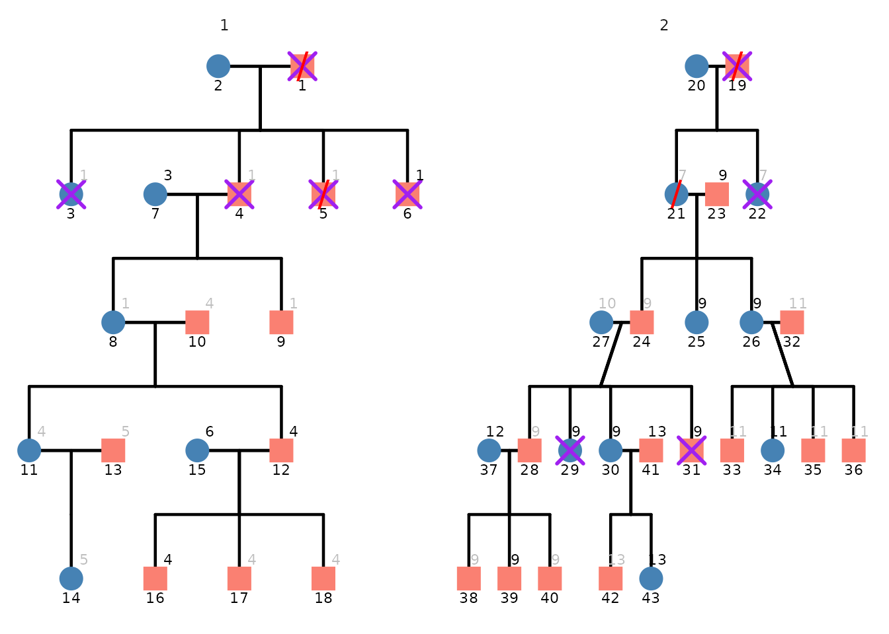
If you want to use standard ggplot2 geoms such as
geom_text() to add labels, I recommend setting
reduce_variables = FALSE in config to prevent
the automatic reduction of variables. This allows you to retain the all
the columns for labeling and faceting. In this example, we use
geom_text() to label each individual with their
matID, and we color the labels randomly in grey or black
for visual interest.
To illustrate the effect of reduce_variables, let us
facet by generation instead of family ID. With
reduce_variables = FALSE, the black segments connecting
individuals follow the nodes to the correct panel. In contrast, when
reduce_variables = TRUE, the segments are drawn on all the
panels because the generation variable isn’t present in the dataframe
used for segment drawing.
ggPedigree(
hazard,
famID = "famID",
personID = "ID",
momID = "momID",
dadID = "dadID",
overlays = list(
list(column = "deceased", code_affected = 1, shape = "cross", color = "purple"),
list(column = "onset", code_affected = 1, shape = "slash", color = "red", stroke = 2)
),
config = list(
code_male = 0,
overlay_include = TRUE,
overlay_mode = "shape",
reduce_variables = F,
sex_color_palette = c("steelblue", "salmon", "grey50")
)
) +
facet_wrap(~gen,
scales = "free_x"
)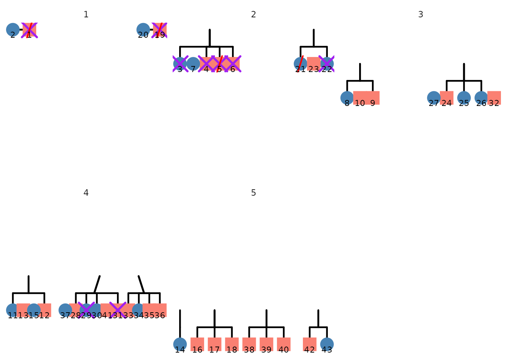
ggPedigree(
hazard,
famID = "famID",
personID = "ID",
momID = "momID",
dadID = "dadID",
overlays = list(
list(column = "deceased", code_affected = 1, shape = "cross", color = "purple"),
list(column = "onset", code_affected = 1, shape = "slash", color = "red", stroke = 2)
),
config = list(
code_male = 0,
overlay_include = TRUE,
overlay_mode = "shape",
reduce_variables = T,
sex_color_palette = c("steelblue", "salmon", "grey50")
)
) +
facet_wrap(~gen,
scales = "free_x"
)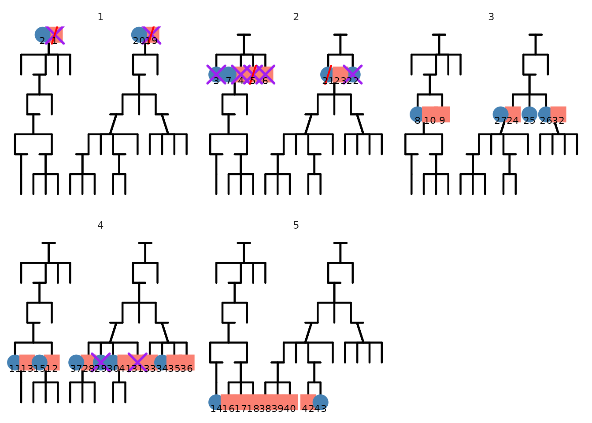
6) Focal fill: highlighting relatives of a focal individual
A common analysis task is to pick a focal individual and visually emphasize how strongly other individuals are related to that focal person. In ggpedigree, this is handled by focal fill. When focal fill is enabled, node fill colors are mapped to a focal-based value (for example additive genetic relatedness or another focal-derived scalar).
Focal fill is controlled entirely through config. The
minimal ingredients are:
focal_fill_include = TRUEfocal_fill_personID = <ID of focal person>-
focal_fill_component = <component to use for focal calculation>. It can be"additive"(default),"mitochondrial","patID", or"matID". -
focal_fill_methodis the Method used for focal fill gradient. Options are ‘steps’, ‘steps2’, ‘step’, ‘step2’, ‘viridis_c’, ‘viridis_d’, ‘viridis_b’, ‘manual’, ‘hue’, ‘gradient2’, ‘gradient’.
Turning focal fill on
Below we choose an individual as the focal person, enable focal fill,
and disable sex coloring to highlight the focal fill pattern clearly.
The exact person identifier must match the personID column
used in the plot.
ggPedigree(
potter,
famID = "famID",
personID = "personID",
momID = "momID",
dadID = "dadID",
config = list(
focal_fill_include = TRUE,
sex_color_include = FALSE,
focal_fill_component = "additive",
focal_fill_personID = 8,
focal_fill_legend_show = TRUE,
focal_fill_legend_title = "Focal relatedness"
)
)
If the plot is dense, it is often helpful to turn labels off or
reduce their prominence, so the focal fill pattern reads cleanly. Note
we can also choose different focal components such as
"mitochondrial", which traces matrilineal relatedness.
ggPedigree(
potter,
famID = "famID",
personID = "personID",
momID = "momID",
dadID = "dadID",
config = list(
focal_fill_include = TRUE,
sex_color_include = FALSE,
focal_fill_personID = 8,
focal_fill_component = "mitochondrial",
label_include = FALSE,
point_scale_by_pedigree = FALSE,
point_size = 6
)
)
Choosing the focal fill scale and colors
Focal fill supports multiple scale methods via
focal_fill_method. For continuous gradients, the most
common choice is "gradient" (default) or
"gradient2".
You can explicitly set the low/mid/high colors used by the focal gradient:
ggPedigree(
potter,
famID = "famID",
personID = "personID",
momID = "momID",
dadID = "dadID",
config = list(
focal_fill_include = TRUE,
sex_color_include = FALSE,
focal_fill_personID = 8,
focal_fill_method = "gradient2",
focal_fill_low_color = "purple",
focal_fill_mid_color = "orange",
focal_fill_high_color = "red",
focal_fill_scale_midpoint = 0.10,
focal_fill_legend_show = TRUE
)
)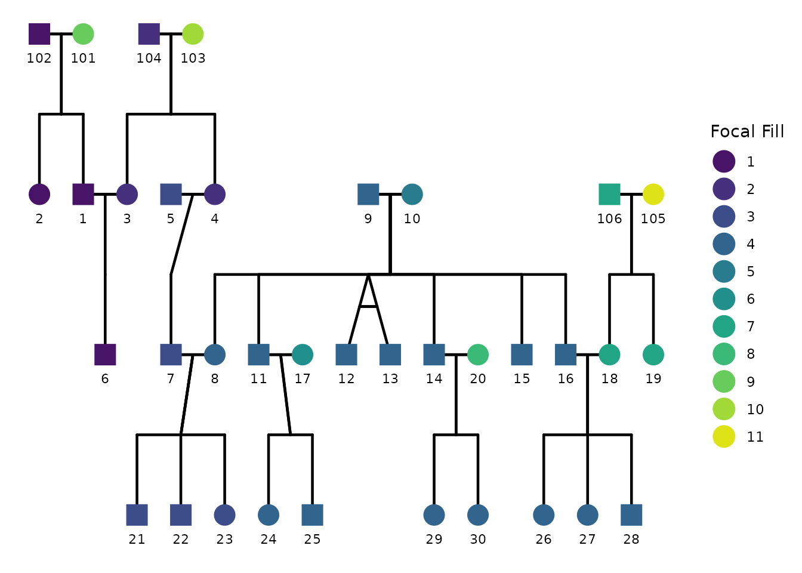
Discrete focal fill palettes
If you prefer discrete bins rather than a continuous gradient, you
can use step-based scales (for example "steps" /
"steps2"). When using step-based methods,
focal_fill_n_breaks controls the number of discrete
breaks.
ggPedigree(
potter,
famID = "famID",
personID = "personID",
momID = "momID",
dadID = "dadID",
config = list(
focal_fill_include = TRUE,
sex_color_include = FALSE,
focal_fill_personID = 8,
focal_fill_method = "steps2",
focal_fill_n_breaks = 9,
focal_fill_legend_show = TRUE
)
)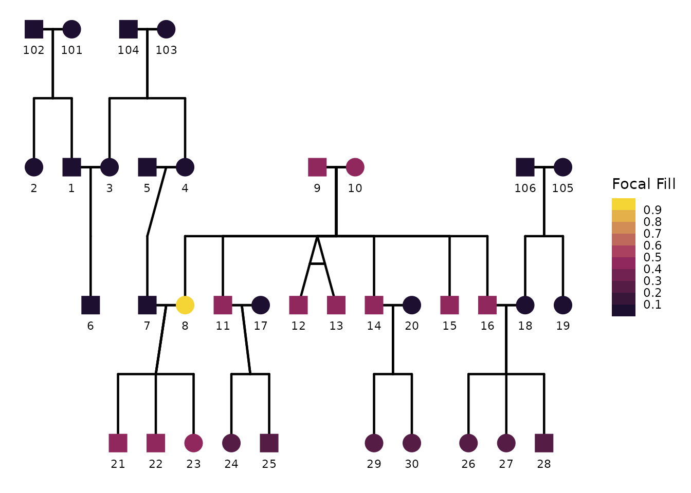
Handling missing and zero values
When focal fill is computed, some individuals can have missing focal
values (for example if they are disconnected). You can control the color
used for missing values with focal_fill_na_color. The
focal_fill_force_zero option forces exact zeros to be
treated as missing so they can be filled in using
focal_fill_na_color.
ggPedigree(
potter,
famID = "famID",
personID = "personID",
momID = "momID",
dadID = "dadID",
config = list(
focal_fill_include = TRUE,
sex_color_include = FALSE,
focal_fill_personID = 4,
focal_fill_force_zero = TRUE,
focal_fill_na_color = "grey75"
)
)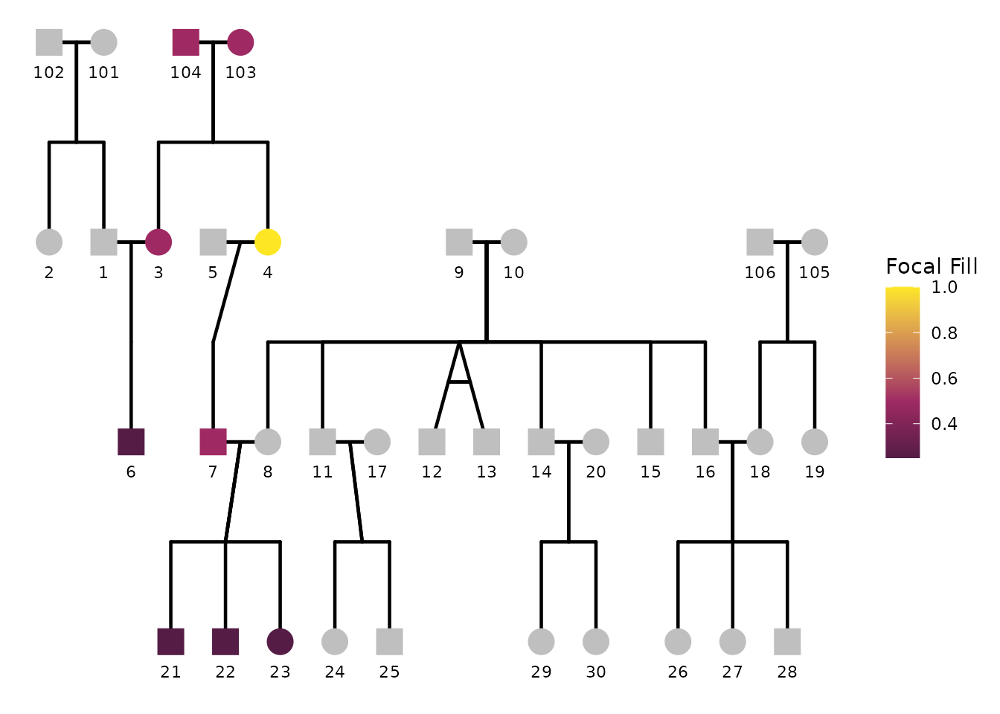
Using viridis-based focal fill
If you want perceptually uniform color scaling, focal fill supports
viridis options through focal_fill_method = "viridis_c"
(continuous) or "viridis_d" (discrete). You can control the
viridis option and range using:
focal_fill_viridis_optionfocal_fill_viridis_beginfocal_fill_viridis_endfocal_fill_viridis_direction
Here the focal fill is drawn using paternal relatedness. Each individual’s fill color indicates which patriline they belong to, colored using a discrete viridis palette.
ggPedigree(
potter,
famID = "famID",
personID = "personID",
momID = "momID",
dadID = "dadID",
config = list(
focal_fill_include = TRUE,
sex_color_include = FALSE,
focal_fill_personID = 5,
focal_fill_method = "viridis_d",
focal_fill_component = "patID",
focal_fill_viridis_option = "D",
focal_fill_viridis_begin = 0.05,
focal_fill_viridis_end = 0.95,
focal_fill_viridis_direction = 1,
focal_fill_legend_show = TRUE
)
)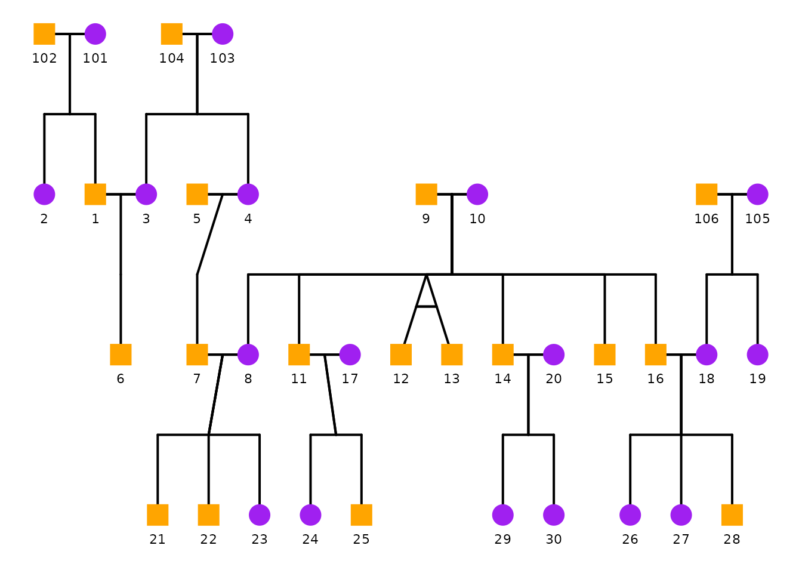
7) Lineage-colored segments: tracing family lines
Focal fill (Section 6) colors the nodes. You can instead—or additionally—color the connecting segments by family lineage, which makes it easy to trace a paternal line, a maternal line, or a mitochondrial (matrilineal) line through the tree.
This is controlled by the segment_lineage_* options. The
minimal ingredients are:
segment_lineage_include = TRUE-
segment_lineage_component = <line to trace>. Uses the same vocabulary as focal fill:"mitochondrial"/"mtdna","maternal","paternal","family","additive", or"common nuclear". -
segment_lineage_focal_personID = <ID>(optional). When supplied, segments are colored by their relationship to that focal person, so off-line segments fade to grey and only the lines connected to that individual are highlighted.
Each segment inherits the lineage value of the person it is anchored to, so the coloring is unambiguous even where a spouse link bridges two different lines.
Coloring every line
With no focal person, each lineage group gets its own color. Here every matriline (mitochondrial line) is drawn in a distinct color. We disable sex coloring so the segment colors read cleanly.
ggPedigree(
potter,
famID = "famID",
personID = "personID",
momID = "momID",
dadID = "dadID",
config = list(
sex_color_include = FALSE,
focal_fill_include = FALSE,
segment_lineage_include = TRUE,
segment_lineage_component = "mitochondrial",
segment_lineage_legend_title = "Matriline"
)
)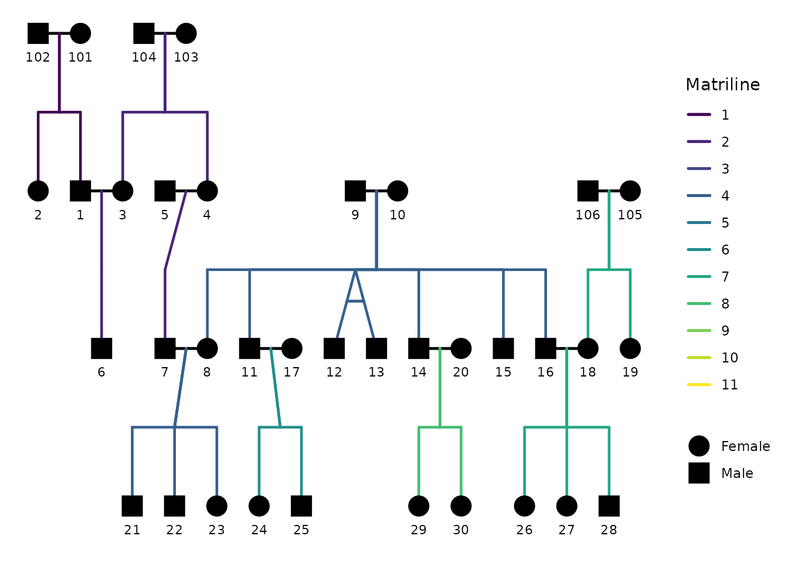
Switching segment_lineage_component to
"paternal" traces the patrilines instead—useful for
following surname lines.
ggPedigree(
potter,
famID = "famID",
personID = "personID",
momID = "momID",
dadID = "dadID",
config = list(
sex_color_include = FALSE,
focal_fill_include = FALSE,
segment_lineage_include = TRUE,
segment_lineage_component = "paternal",
segment_lineage_legend_title = "Patriline"
)
)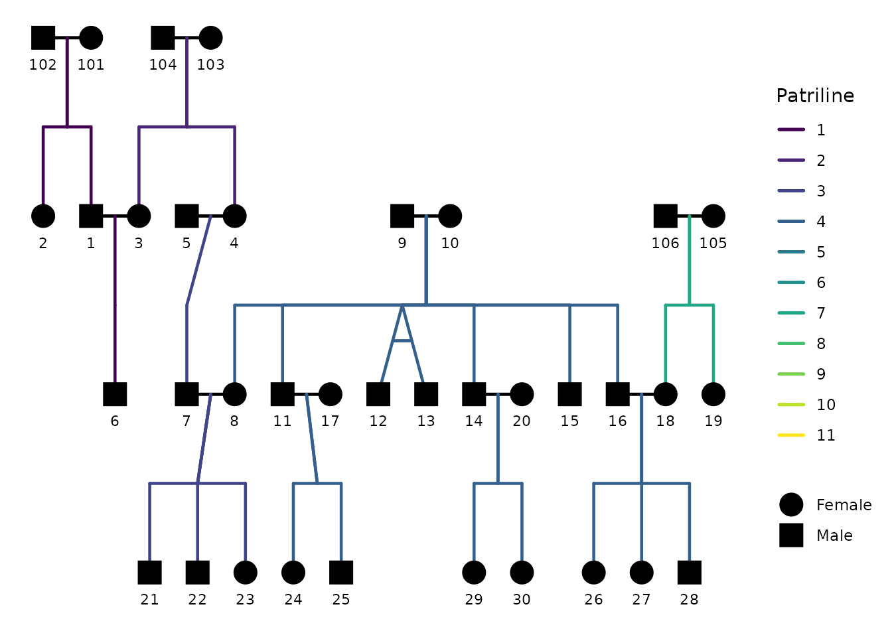
Tracing the lines connected to one person
Supply segment_lineage_focal_personID to highlight only
the lineage that runs through a chosen individual. With the
mitochondrial component, this lights up that person’s matrilineal chain
and greys out everything else.
ggPedigree(
potter,
famID = "famID",
personID = "personID",
momID = "momID",
dadID = "dadID",
config = list(
sex_color_include = FALSE,
focal_fill_include = FALSE,
segment_lineage_include = TRUE,
segment_lineage_component = "mitochondrial",
segment_lineage_focal_personID = 8,
segment_lineage_method = "viridis_c",
segment_lineage_na_color = "grey85"
)
)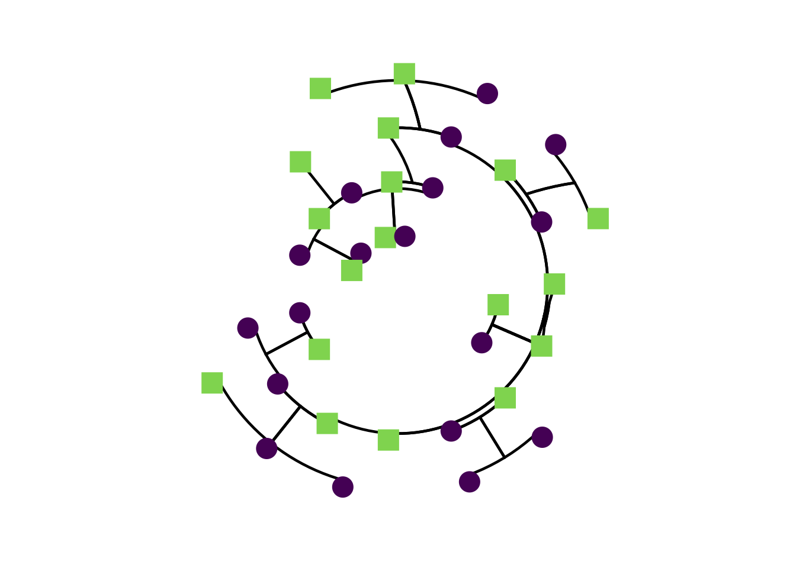
Choosing which segments participate
By default the inheritance-bearing segments are colored
(segment_lineage_types = c("parent", "offspring", "sibling", "mz")).
You can broaden or narrow this—for example, add "spouse" to
also color spouse links, or restrict to just the parent stubs.
ggPedigree(
potter,
famID = "famID",
personID = "personID",
momID = "momID",
dadID = "dadID",
config = list(
sex_color_include = FALSE,
focal_fill_include = FALSE,
segment_lineage_include = TRUE,
segment_lineage_component = "paternal",
segment_lineage_types = c("parent", "offspring", "sibling", "mz", "spouse")
)
)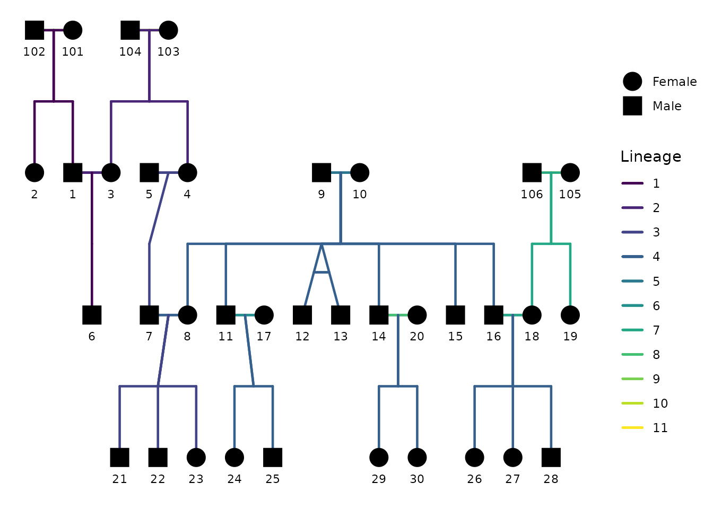
Combining node focal fill with segment lineage
The most expressive use is to color nodes by focal
relatedness and segments by lineage at the
same time. Because nodes and segments then need two independent color
scales, this requires the suggested ggnewscale
package. If it is not installed, the segments fall back to their fixed
colors with a warning.
ggPedigree(
potter,
famID = "famID",
personID = "personID",
momID = "momID",
dadID = "dadID",
config = list(
sex_color_include = FALSE,
# nodes: additive relatedness to the focal person
focal_fill_include = TRUE,
focal_fill_component = "additive",
focal_fill_personID = 8,
focal_fill_legend_title = "Relatedness",
# segments: paternal line membership
segment_lineage_include = TRUE,
segment_lineage_component = "paternal",
segment_lineage_legend_title = "Patriline"
)
)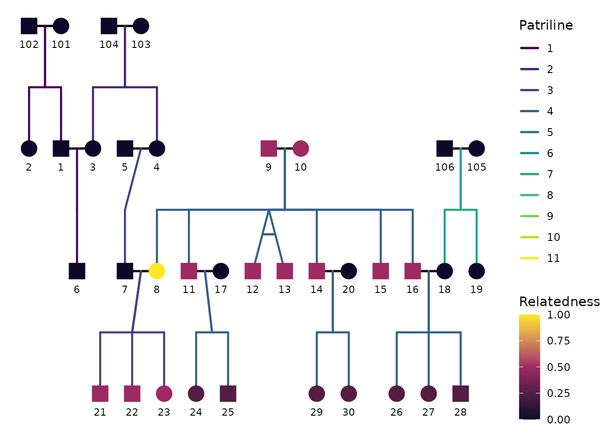
Interactive plots. The combined node + segment coloring relies on
ggnewscale, whose second color scale does not convert toplotly. InggPedigreeInteractive(), single-scale lineage coloring (segments only, nodes uncolored) works as shown above; if you also enable node coloring, the interactive plot warns and falls back to fixed segment colors. Use the staticggPedigree()for the combined view.
8) Global greyscale / black-and-white switch
If you want a black-and-white plot, you can request it using:
-
color_theme = "greyscale"(also accepts"bw","black", etc.)
This triggers coordinated adjustments so the plot remains coherent without manually changing multiple palettes.
ggPedigree(
potter,
famID = "famID",
personID = "personID",
momID = "momID",
dadID = "dadID",
config = list(
color_theme = "bw",
focal_fill_include = TRUE,
sex_color_include = FALSE,
focal_fill_personID = 5,
segment_linewidth = 0.7,
point_scale_by_pedigree = FALSE,
point_size = 6
)
)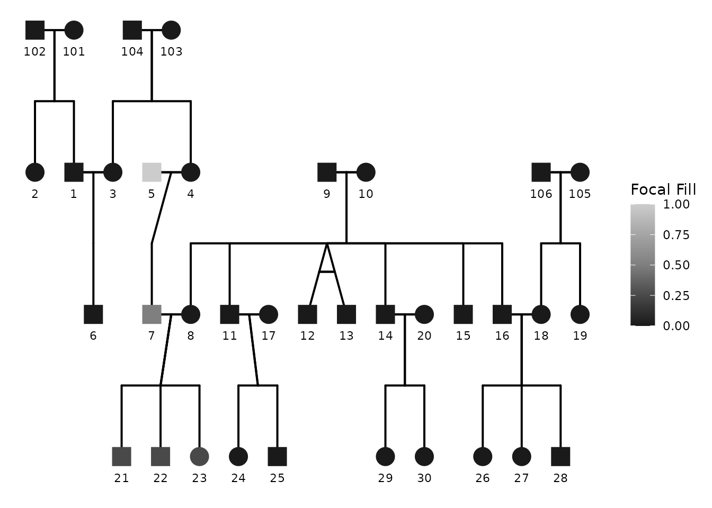
9) Interactive pedigrees: ggPedigreeInteractive()
Interactive pedigrees usually require thinner segments and careful
tooltip selection. Tooltips are controlled primarily through
tooltip_columns, while most drawing options are still
handled by config.
ggPedigreeInteractive(
potter,
famID = "famID",
personID = "personID",
momID = "momID",
dadID = "dadID",
tooltip_columns = c("personID", "first_name", "sex"),
config = list(
label_include = FALSE,
point_scale_by_pedigree = FALSE,
point_size = 7,
segment_linewidth = 0.5,
sex_color_include = FALSE,
# nodes: additive relatedness to the focal person
focal_fill_include = TRUE,
focal_fill_component = "additive",
focal_fill_personID = 8,
focal_fill_legend_title = "Relatedness"
)
)10) Layout and coordinate system
In addition to the above options, layout and coordinate system are
also configurable via config. For example if you are
interested in a circular layout, you can set
coord_layout = "radial" and adjust the minimum radius with
coord_radial_min_radius. This plot uses polar coordinates
to create a circular pedigree layout.
ggPedigree(
potter,
famID = "famID",
personID = "personID",
momID = "momID",
dadID = "dadID",
config = list(
coord_layout = "radial",
point_scale_by_pedigree = FALSE,
coord_radial_min_radius = 1,
label_include = FALSE,
spread_out_generations_factor = 12.5,
spread_out_generations = TRUE
)
) #+theme_classic()
11) Pinning individuals to fixed positions
Normally the horizontal position of each person is decided by the
layout engine. If you want to override that for specific individuals—to
slide one person to a particular spot, separate two overlapping
branches, or line up a person with a feature elsewhere in the plot—use
fixed_positions.
fixed_positions is a data frame with an ID column (named
to match your personID) plus an x and/or
y column. Each row pins that person to an absolute
position. A missing or NA entry leaves that axis as
computed.
Positions are given in raw layout-slot units: the
same units calculateCoordinates() produces, before
generation_width/generation_height scaling and
any radial transform. The easiest way to discover sensible values is to
inspect the computed layout first:
coords <- calculateCoordinates(
potter,
personID = "personID", momID = "momID", dadID = "dadID"
)
head(coords[, c("personID", "x_pos", "y_pos")])
#> personID x_pos y_pos
#> 1 1 1.0 2
#> 2 2 0.0 2
#> 3 3 2.0 2
#> 4 4 4.0 2
#> 5 5 3.0 2
#> 6 6 1.5 3Here we pin one person far to the left of their generation. Because all connecting segments are derived from these coordinates, the lines follow the pinned node automatically—no other configuration needed.
ggPedigree(
potter,
famID = "famID",
personID = "personID",
momID = "momID",
dadID = "dadID",
config = list(
fixed_positions = data.frame(
personID = 8,
x = -1.5
)
)
)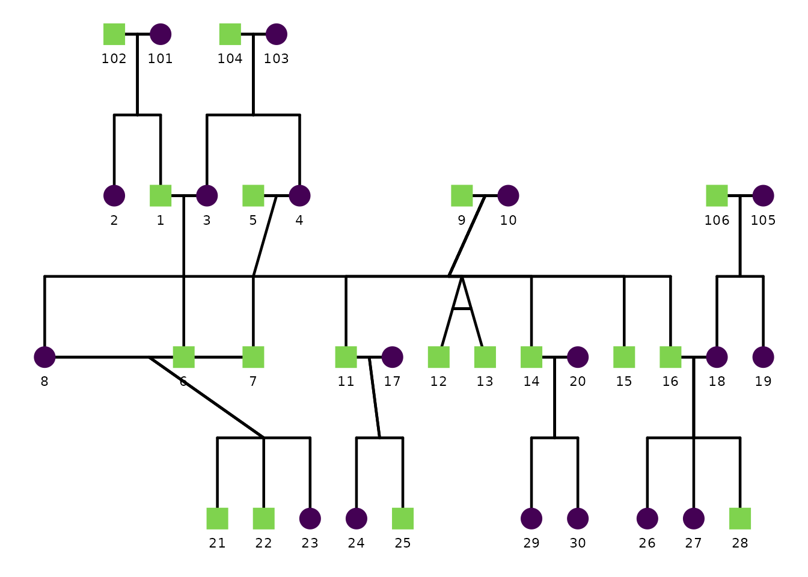
You can pin several people at once, and set x,
y, or both. Use NA to leave one axis
untouched:
ggPedigree(
potter,
famID = "famID",
personID = "personID",
momID = "momID",
dadID = "dadID",
config = list(
fixed_positions = data.frame(
personID = c(106, 105),
x = c(11, 13), # person 106 is shifted right; person 105 also shifts in x
y = c(NA, 1.80) # person 106 keeps its generation; person 105 also shifts in y
)
)
)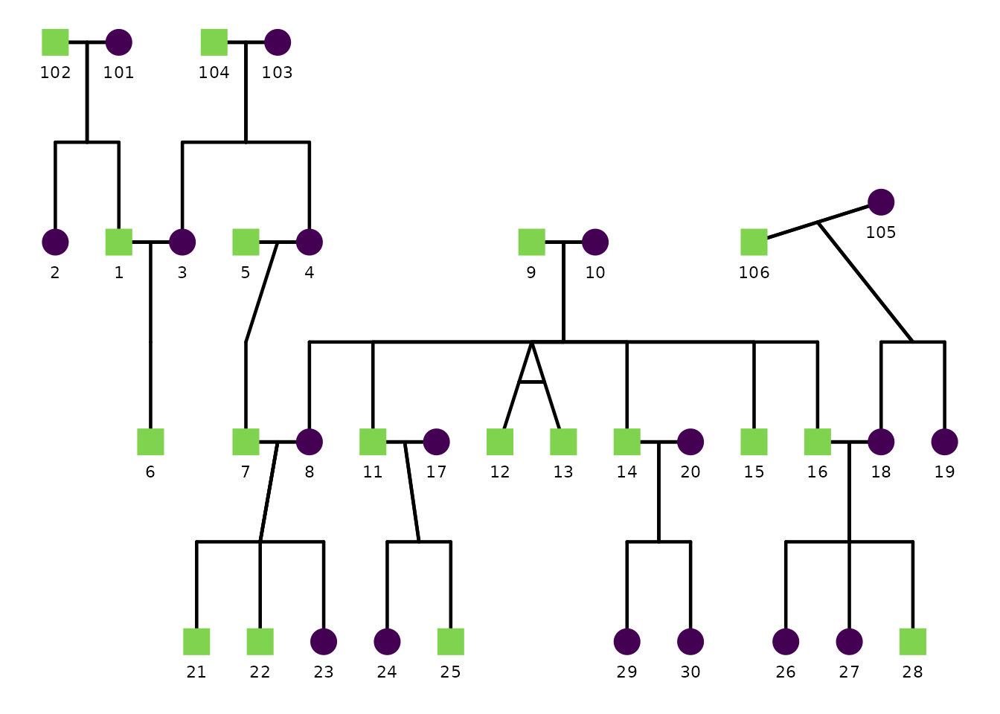
Pinning a parent
When you pin a parent, the connector running down to
their children is re-anchored to the pinned position by default, so it
stays attached. If you would rather move only the parent node and its
spouse link—leaving the child connector where it was—set
fixed_positions_update_family = FALSE.
ggPedigree(
potter,
famID = "famID",
personID = "personID",
momID = "momID",
dadID = "dadID",
config = list(
fixed_positions = data.frame(personID = 101, x = 8, y = 1.5),
fixed_positions_update_family = FALSE
)
)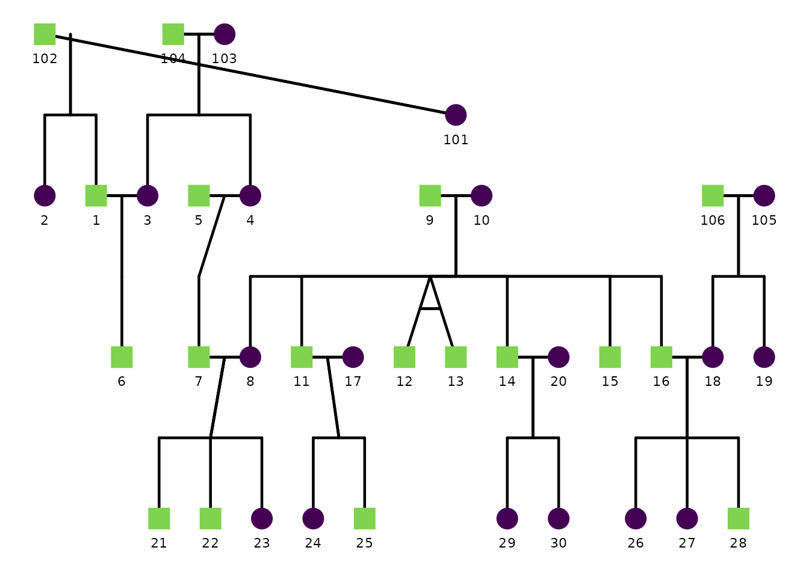
Pinning only repositions the people you name; everyone else stays where the layout placed them, so it is up to you to choose positions that do not overlap. IDs that are not found in the pedigree are ignored with a warning.
12) Trying different founder orderings
Why row order matters
The layout engine (kinship2) processes individuals in the order they appear in your data. For founders—people with no parents in the pedigree—this row order determines their initial left-to-right placement. Different orderings can move a couple from one side of the tree to the other, shorten long diagonal connectors, or reduce visual crossing of branches.
By default ggpedigree does not shuffle the rows, so the layout is determined by whatever order the data happen to arrive in. Two config options let you explore alternatives:
| Option | Default | Purpose |
|---|---|---|
founder_order_seed |
NULL |
Shuffle row order with this integer seed before layout |
founder_order_tries |
1 |
Try this many random shuffles; return the most compact one |
Comparing two layouts with founder_order_seed
The easiest way to explore is to try a few integer seeds and compare
the plots. Here we look at the default layout, seed 7, and seed 42 for
the potter pedigree.
p_default <- ggPedigree(
potter,
famID = "famID", personID = "personID",
momID = "momID", dadID = "dadID",
config = list(label_include = TRUE, label_text_size = 2.5)
) + ggplot2::ggtitle("Default ordering")
p_seed7 <- ggPedigree(
potter,
famID = "famID", personID = "personID",
momID = "momID", dadID = "dadID",
config = list(
founder_order_seed = 7L,
label_include = TRUE, label_text_size = 2.5
)
) + ggplot2::ggtitle("founder_order_seed = 7")
p_seed42 <- ggPedigree(
potter,
famID = "famID", personID = "personID",
momID = "momID", dadID = "dadID",
config = list(
founder_order_seed = 42L,
label_include = TRUE, label_text_size = 2.5
)
) + ggplot2::ggtitle("founder_order_seed = 42")
p_default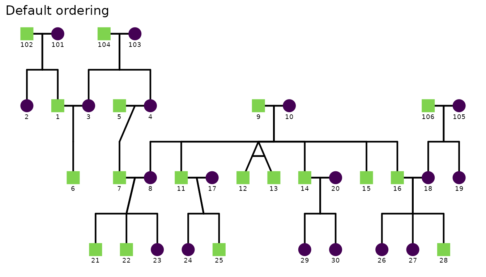
p_seed7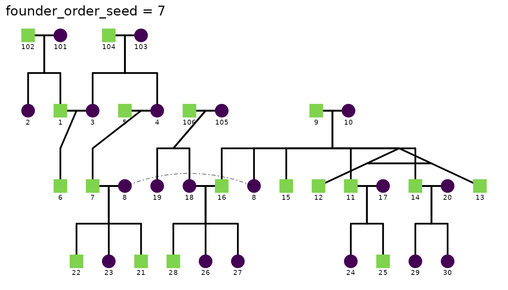
p_seed42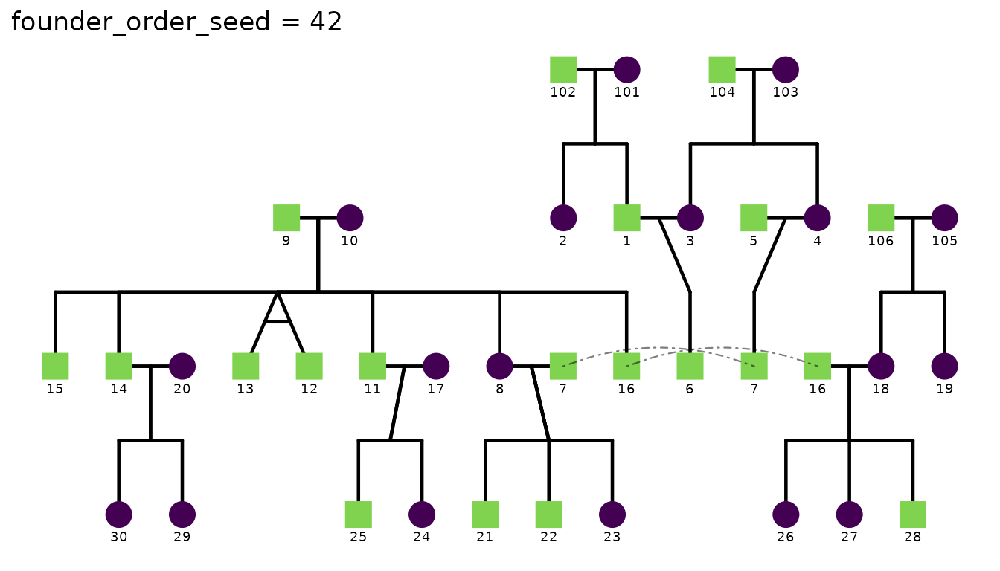
The same seed always produces the same plot, so results are fully reproducible once you have chosen a preferred layout.
Measuring layout quality
calculateCoordinates() returns the raw layout data
frame. You can compute a layout score (total parent-stub offset
— lower means children sit closer to the midpoint of their parents) to
compare candidates numerically before plotting:
scores <- sapply(0:9, function(s) {
coords <- calculateCoordinates(
potter,
personID = "personID", momID = "momID", dadID = "dadID",
config = list(founder_order_seed = s,
debug = FALSE,
return_best_seed = FALSE,
layout_score_method = "parent_stub"
))
ggpedigree:::.layoutScore(coords)
})
data.frame(seed = 0:9, score = round(scores, 2)) |>
knitr::kable(caption = "Layout score for seeds 0–9 (lower = more compact)")| seed | score |
|---|---|
| 0 | 32.84 |
| 1 | 26.71 |
| 2 | 26.71 |
| 3 | 29.38 |
| 4 | 32.81 |
| 5 | 27.06 |
| 6 | 27.54 |
| 7 | 28.43 |
| 8 | 30.12 |
| 9 | 28.13 |
Automatic search with founder_order_tries
If you don’t want to inspect scores by hand, set
founder_order_tries to a larger number and let
ggpedigree pick the best seed automatically. The function
evaluates that many shufflings and returns the most compact result.
ggPedigree(
potter,
famID = "famID", personID = "personID",
momID = "momID", dadID = "dadID",
config = list(
founder_order_seed = 1L, # start search from seed 1
founder_order_tries = 10L, # try seeds 1 through 155
label_include = TRUE, label_text_size = 2.5,
return_best_seed = TRUE # return the winning seed in the plot attributes for reference
)
) + ggplot2::ggtitle("Best of seeds 1–10")
#> Best founder order seed: 5 with layout score: 267.060969564274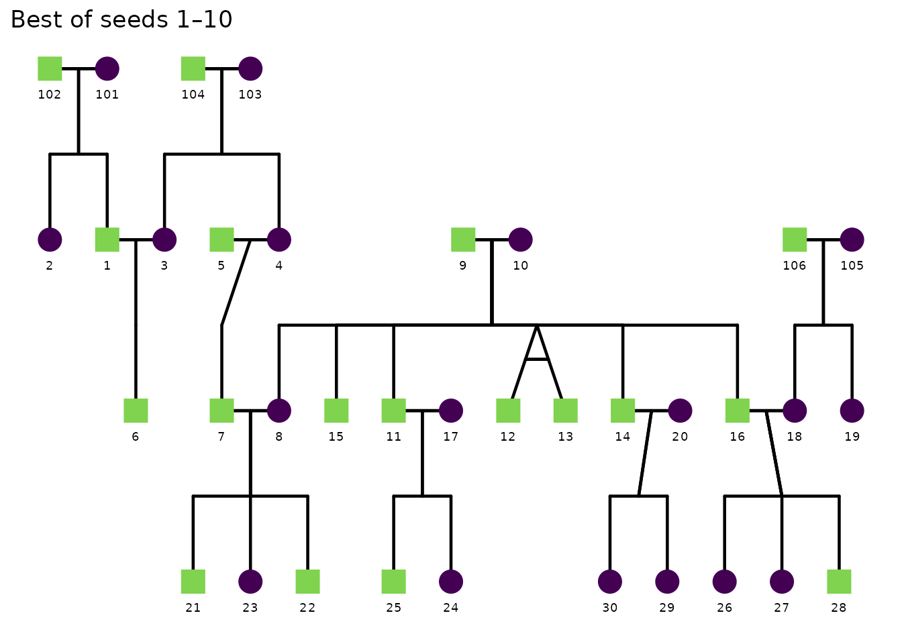
p1 <- ggPedigree(
potter,
famID = "famID", personID = "personID",
momID = "momID", dadID = "dadID",
config = list(
founder_order_seed = 5L,
label_include = TRUE, label_text_size = 2.5
)
)
p2 <- ggPedigree(
potter,
famID = "famID", personID = "personID",
momID = "momID", dadID = "dadID",
config = list(
label_include = TRUE, label_text_size = 2.5
)
)
cowplot::plot_grid(p1 + ggplot2::ggtitle("Seed 5") + theme_linedraw()
, NULL,
p2 + ggplot2::ggtitle("Default")+ theme_linedraw()
, NULL,
ncol = 2,
byrow = T,
rel_widths = c(1, .1, 1, .1)
) 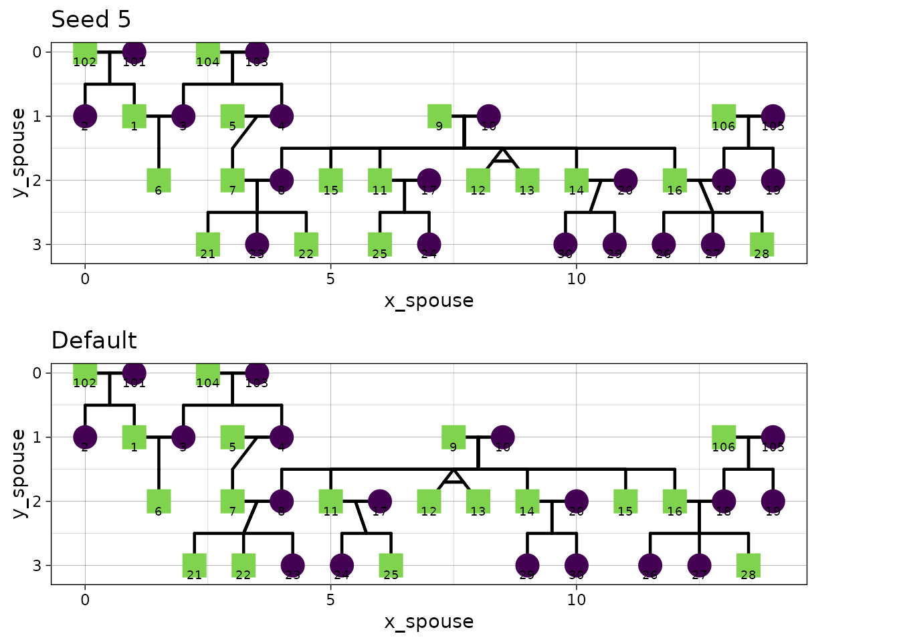
To make the result reproducible, always pair
founder_order_tries with an explicit
founder_order_seed. Without a seed, the function tries
seeds 1, 2, …, N—still deterministic, but recording the
seed in your config makes the intent explicit.
Tip: For very large pedigrees the search can be slow because each trial reruns the full layout calculation. Start with a small
founder_order_tries(5–10) to identify a good region, then fix the winning seed for production plots.
Saving and loading a config file
If you want to reuse the same overrides across scripts or share them with collaborators, save your config list.
cfg <- list(
point_scale_by_pedigree = FALSE,
point_size = 6,
segment_linewidth = 0.7,
label_include = TRUE,
label_text_size = 3,
sex_color_palette = c("purple", "orange", "grey50")
)
saveRDS(cfg, file = "ggpedigree_config.rds")
cfg <- readRDS("ggpedigree_config.rds")
ggPedigree(
potter,
famID = "famID",
personID = "personID",
momID = "momID",
dadID = "dadID",
config = cfg
)
Config reference
The config argument accepts many options. Most users
will only change a small subset, but the full list of supported keys can
be printed programmatically.
Show all config keys (names only)
cfg_names <- sort(names(ggpedigree:::getDefaultPlotConfig("ggPedigree")))
tibble::tibble(Config_Key = cfg_names) %>%
knitr::kable()| Config_Key |
|---|
| add_phantoms |
| affected_fill_code_affected |
| affected_fill_code_unaffected |
| affected_fill_color_affected |
| affected_fill_color_unaffected |
| affected_fill_include |
| affected_fill_label_affected |
| affected_fill_label_unaffected |
| affected_fill_shape_female |
| affected_fill_shape_male |
| affected_fill_shape_unknown |
| alpha |
| annotate_include |
| annotate_x_shift |
| annotate_y_shift |
| apply_default_scales |
| apply_default_theme |
| axis_text_angle_x |
| axis_text_angle_y |
| axis_text_color |
| axis_text_family |
| axis_text_size |
| axis_x_label |
| axis_y_label |
| ci_include |
| ci_ribbon_alpha |
| code_female |
| code_male |
| code_na |
| code_unknown |
| color_palette_default |
| color_palette_high |
| color_palette_low |
| color_palette_mid |
| color_scale_midpoint |
| color_scale_theme |
| color_theme |
| coord_layout |
| coord_radial_end_angle |
| coord_radial_min_radius |
| coord_radial_scale |
| coord_radial_start_angle |
| debug |
| drop_classic_kin |
| drop_non_classic_sibs |
| fast_threshold |
| filter_degree_max |
| filter_degree_min |
| filter_n_pairs |
| fixed_positions |
| fixed_positions_update_family |
| focal_fill_chroma |
| focal_fill_component |
| focal_fill_force_zero |
| focal_fill_high_color |
| focal_fill_hue_direction |
| focal_fill_hue_range |
| focal_fill_include |
| focal_fill_legend_show |
| focal_fill_legend_title |
| focal_fill_lightness |
| focal_fill_low_color |
| focal_fill_method |
| focal_fill_mid_color |
| focal_fill_n_breaks |
| focal_fill_na_color |
| focal_fill_personID |
| focal_fill_scale_midpoint |
| focal_fill_shape |
| focal_fill_use_log |
| focal_fill_viridis_begin |
| focal_fill_viridis_direction |
| focal_fill_viridis_end |
| focal_fill_viridis_option |
| founder_order_seed |
| founder_order_tries |
| generation_height |
| generation_width |
| group_by_kin |
| grouping_column |
| hints |
| label_column |
| label_include |
| label_max_overlaps |
| label_method |
| label_nudge_x |
| label_nudge_y |
| label_nudge_y_flip |
| label_scale_by_pedigree |
| label_segment_color |
| label_text_angle |
| label_text_color |
| label_text_family |
| label_text_size |
| layout_score_method |
| match_threshold_percent |
| matrix_diagonal_include |
| matrix_fill_legend_title |
| matrix_isChild_method |
| matrix_lower_triangle_include |
| matrix_sparse |
| matrix_upper_triangle_include |
| max_degree_levels |
| optimize_plotly |
| outline_additional_size |
| outline_alpha |
| outline_color |
| outline_color_affected |
| outline_color_code_affected |
| outline_color_code_unaffected |
| outline_color_include |
| outline_color_label_affected |
| outline_color_label_unaffected |
| outline_color_unaffected |
| outline_include |
| outline_multiplier |
| overlay_alpha_affected |
| overlay_alpha_unaffected |
| overlay_code_affected |
| overlay_code_unaffected |
| overlay_color |
| overlay_include |
| overlay_label_affected |
| overlay_label_unaffected |
| overlay_legend_show |
| overlay_legend_title |
| overlay_mode |
| overlay_shape |
| overlay_size |
| overlay_stroke |
| override_many2many |
| ped_align |
| ped_packed |
| ped_width |
| plot_subtitle |
| plot_title |
| point_scale_by_pedigree |
| point_size |
| preset |
| recode_missing_ids |
| recode_missing_sex |
| reduce_variables |
| relation |
| reposition_founders |
| return_best_seed |
| return_interactive |
| return_mid_parent |
| return_static |
| return_widget |
| segment_default_color |
| segment_lineage_component |
| segment_lineage_focal_personID |
| segment_lineage_force_zero |
| segment_lineage_include |
| segment_lineage_legend_show |
| segment_lineage_legend_title |
| segment_lineage_method |
| segment_lineage_na_color |
| segment_lineage_palette |
| segment_lineage_types |
| segment_lineend |
| segment_linejoin |
| segment_linetype |
| segment_linewidth |
| segment_mz_alpha |
| segment_mz_color |
| segment_mz_linetype |
| segment_mz_t |
| segment_offspring_color |
| segment_parent_color |
| segment_scale_by_pedigree |
| segment_self_alpha |
| segment_self_angle |
| segment_self_color |
| segment_self_curvature |
| segment_self_linetype |
| segment_self_linewidth |
| segment_sibling_color |
| segment_spouse_color |
| sex_color_include |
| sex_color_palette |
| sex_legend_show |
| sex_legend_title |
| sex_shape_female |
| sex_shape_include |
| sex_shape_labels |
| sex_shape_male |
| sex_shape_unknown |
| spread_out_generations |
| spread_out_generations_factor |
| status_alpha_affected |
| status_alpha_unaffected |
| status_code_affected |
| status_code_unaffected |
| status_color_affected |
| status_color_palette |
| status_color_unaffected |
| status_include |
| status_label_affected |
| status_label_unaffected |
| status_legend_show |
| status_legend_title |
| status_shape_affected |
| tile_cluster |
| tile_color_border |
| tile_color_palette |
| tile_geom |
| tile_interpolate |
| tile_linejoin |
| tile_na_rm |
| tooltip_columns |
| tooltip_include |
| use_only_classic_kin |
| use_relative_degree |
| value_rounding_digits |
Show all config keys with defaults
df <- ggpedigree:::getDefaultPlotConfig("ggPedigree") %>%
# is a list
unlist() %>%
as.data.frame() %>%
tibble::rownames_to_column(var = "Config_Key") %>%
rename(Default_Value = ".")
df %>%
knitr::kable()| Config_Key | Default_Value |
|---|---|
| apply_default_scales | TRUE |
| segment_default_color | black |
| apply_default_theme | TRUE |
| color_theme | color |
| color_palette_default1 | #440154FF |
| color_palette_default2 | #7fd34e |
| color_palette_default3 | #f1e51d |
| color_palette_low | #000004FF |
| color_palette_mid | #56106EFF |
| color_palette_high | #FCFDBFFF |
| color_scale_midpoint | 0.5 |
| color_scale_theme | ggthemes::calc |
| alpha | 1 |
| value_rounding_digits | 3 |
| code_male | 1 |
| code_na | NA |
| code_female | 0 |
| code_unknown | NA |
| filter_n_pairs | 500 |
| filter_degree_min | 0 |
| filter_degree_max | 7 |
| drop_classic_kin | FALSE |
| drop_non_classic_sibs | TRUE |
| use_only_classic_kin | TRUE |
| use_relative_degree | TRUE |
| group_by_kin | TRUE |
| match_threshold_percent | 10 |
| max_degree_levels | 12 |
| grouping_column | mtdna_factor |
| annotate_include | TRUE |
| annotate_x_shift | -0.1 |
| annotate_y_shift | 0.005 |
| label_include | TRUE |
| label_column | personID |
| label_method | geom_text |
| label_max_overlaps | 25 |
| label_nudge_x | 0 |
| label_nudge_y | 0.15 |
| label_nudge_y_flip | TRUE |
| label_segment_color | NA |
| label_text_angle | 0 |
| label_text_size | 3 |
| label_text_color | black |
| label_text_family | sans |
| label_scale_by_pedigree | TRUE |
| point_size | 6 |
| point_scale_by_pedigree | TRUE |
| outline_include | FALSE |
| outline_multiplier | 1.25 |
| outline_color | black |
| outline_additional_size | 0 |
| outline_alpha | 1 |
| tooltip_include | TRUE |
| tooltip_columns1 | ID1 |
| tooltip_columns2 | ID2 |
| tooltip_columns3 | value |
| axis_text_angle_x | 90 |
| axis_text_angle_y | 0 |
| axis_text_size | 9 |
| axis_text_color | black |
| axis_text_family | sans |
| generation_height | 1 |
| generation_width | 1 |
| segment_linewidth | 0.8 |
| segment_linetype | 1 |
| segment_lineend | round |
| segment_linejoin | round |
| segment_scale_by_pedigree | FALSE |
| segment_offspring_color | black |
| segment_parent_color | black |
| segment_self_color | black |
| segment_sibling_color | black |
| segment_spouse_color | black |
| segment_mz_color | black |
| segment_mz_linetype | 1 |
| segment_mz_alpha | 1 |
| segment_mz_t | 0.6 |
| segment_self_linetype | dotdash |
| segment_self_alpha | 0.5 |
| segment_self_angle | 90 |
| segment_self_curvature | -0.2 |
| segment_self_linewidth | 0.4 |
| segment_lineage_include | FALSE |
| segment_lineage_component | mitochondrial |
| segment_lineage_types1 | parent |
| segment_lineage_types2 | offspring |
| segment_lineage_types3 | sibling |
| segment_lineage_types4 | mz |
| segment_lineage_method | viridis_d |
| segment_lineage_palette1 | #052f60 |
| segment_lineage_palette2 | #e69f00 |
| segment_lineage_palette3 | #56b4e9 |
| segment_lineage_palette4 | #009e73 |
| segment_lineage_palette5 | #f0e442 |
| segment_lineage_palette6 | #0072b2 |
| segment_lineage_palette7 | #d55e00 |
| segment_lineage_palette8 | #cc79a7 |
| segment_lineage_na_color | grey80 |
| segment_lineage_force_zero | TRUE |
| segment_lineage_legend_show | TRUE |
| segment_lineage_legend_title | Lineage |
| sex_color_include | TRUE |
| sex_legend_title | Sex |
| sex_shape_labels1 | Female |
| sex_shape_labels2 | Male |
| sex_shape_labels3 | Unknown |
| sex_color_palette1 | #440154FF |
| sex_color_palette2 | #7fd34e |
| sex_color_palette3 | #f1e51d |
| sex_shape_female | 16 |
| sex_shape_male | 15 |
| sex_shape_unknown | 18 |
| sex_legend_show | FALSE |
| sex_shape_include | TRUE |
| status_include | TRUE |
| status_code_affected | 1 |
| status_code_unaffected | 0 |
| status_label_affected | Affected |
| status_label_unaffected | Unaffected |
| status_alpha_affected | 1 |
| status_alpha_unaffected | 0 |
| status_color_palette1 | #440154FF |
| status_color_palette2 | #7fd34e |
| status_color_affected | black |
| status_color_unaffected | #7fd34e |
| status_shape_affected | 4 |
| status_legend_title | Affected |
| status_legend_show | FALSE |
| overlay_shape | 4 |
| overlay_code_affected | 1 |
| overlay_code_unaffected | 0 |
| overlay_label_affected | Affected |
| overlay_label_unaffected | Unaffected |
| overlay_alpha_unaffected | 0 |
| overlay_color | black |
| overlay_alpha_affected | 1 |
| overlay_include | FALSE |
| overlay_mode | alpha |
| overlay_stroke | 1.5 |
| overlay_legend_title | Overlay |
| overlay_legend_show | FALSE |
| focal_fill_include | FALSE |
| focal_fill_legend_show | TRUE |
| focal_fill_personID | 1 |
| focal_fill_legend_title | Focal Fill |
| focal_fill_high_color | #FDE725FF |
| focal_fill_mid_color | #9F2A63FF |
| focal_fill_low_color | #0D082AFF |
| focal_fill_scale_midpoint | 0.5 |
| focal_fill_method | gradient |
| focal_fill_component | additive |
| focal_fill_shape | 21 |
| focal_fill_na_color | black |
| focal_fill_use_log | FALSE |
| focal_fill_force_zero | FALSE |
| focal_fill_hue_range1 | 0 |
| focal_fill_hue_range2 | 360 |
| focal_fill_chroma | 50 |
| focal_fill_lightness | 50 |
| focal_fill_hue_direction | horizontal |
| focal_fill_viridis_option | D |
| focal_fill_viridis_begin | 0 |
| focal_fill_viridis_end | 1 |
| focal_fill_viridis_direction | 1 |
| ci_include | TRUE |
| ci_ribbon_alpha | 0.3 |
| tile_color_palette1 | white |
| tile_color_palette2 | gold |
| tile_color_palette3 | red |
| tile_color_border | NA |
| tile_cluster | TRUE |
| tile_interpolate | TRUE |
| tile_geom | geom_tile |
| tile_na_rm | FALSE |
| tile_linejoin | mitre |
| matrix_fill_legend_title | Relatedness |
| matrix_sparse | FALSE |
| matrix_isChild_method | partialparent |
| matrix_diagonal_include | TRUE |
| matrix_upper_triangle_include | FALSE |
| matrix_lower_triangle_include | TRUE |
| return_static | FALSE |
| return_widget | FALSE |
| return_interactive | FALSE |
| return_mid_parent | FALSE |
| reduce_variables | TRUE |
| reposition_founders | TRUE |
| ped_packed | TRUE |
| ped_align | TRUE |
| ped_width | 15 |
| fast_threshold | 1000 |
| founder_order_tries | 1 |
| layout_score_method | composite |
| return_best_seed | FALSE |
| fixed_positions_update_family | TRUE |
| coord_layout | cartesian |
| coord_radial_start_angle | -90 |
| coord_radial_end_angle | 270 |
| coord_radial_scale | 1.5 |
| coord_radial_min_radius | 0.75 |
| spread_out_generations | TRUE |
| spread_out_generations_factor | 0.5 |
| override_many2many | FALSE |
| optimize_plotly | TRUE |
| recode_missing_ids | TRUE |
| recode_missing_sex | TRUE |
| add_phantoms | FALSE |
| debug | FALSE |
| affected_fill_include | FALSE |
| affected_fill_code_affected | 1 |
| affected_fill_code_unaffected | 0 |
| affected_fill_label_affected | Affected |
| affected_fill_label_unaffected | Unaffected |
| affected_fill_color_affected | black |
| affected_fill_color_unaffected | NA |
| affected_fill_shape_female | 21 |
| affected_fill_shape_male | 22 |
| affected_fill_shape_unknown | 23 |
| outline_color_include | FALSE |
| outline_color_code_affected | 1 |
| outline_color_code_unaffected | 0 |
| outline_color_label_affected | Highlighted |
| outline_color_label_unaffected | Default |
| outline_color_affected | blue |
| outline_color_unaffected | black |
| preset | none |